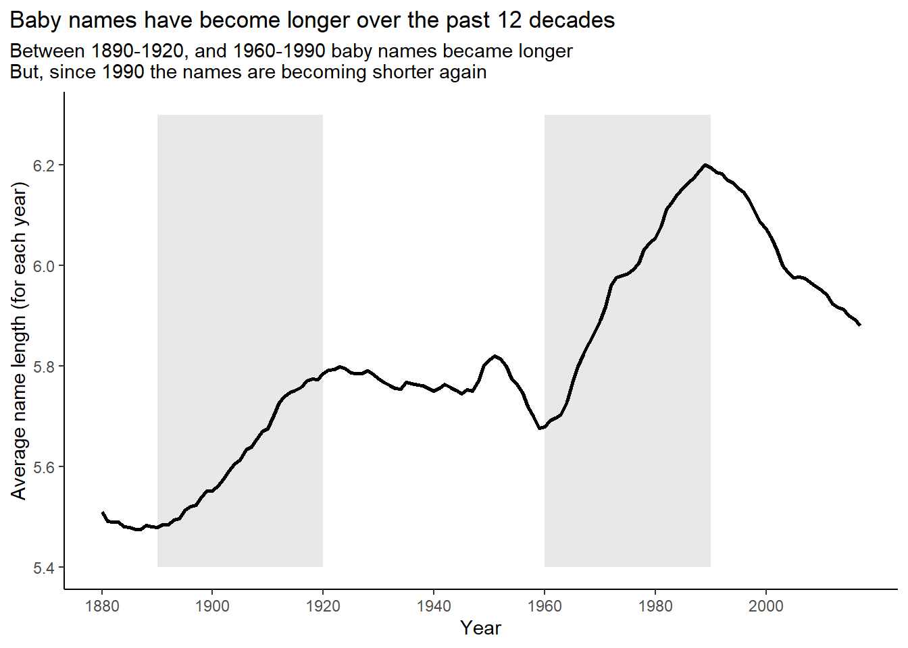

x = "He said \"That's amazing!\""
str_view(x)[1] │ He said "That's amazing!"Strings
Aditya Dahiya
September 10, 2023
Important uses of quoting in R: –
| Code | Purpose |
\n |
newline (aka ‘line feed’) |
\t |
tab |
\b |
backspace |
\v |
vertical tab |
\\ |
backslash ‘\’ |
\' |
ASCII apostrophe ‘'’ |
\" |
ASCII quotation mark ‘"’ |
\nnn |
character with given octal code (1, 2 or 3 digits) |
\xnn |
character with given hex code (1 or 2 hex digits) |
Create strings that contain the following values:
He said "That's amazing!"
\a\b\c\d
\\\\\\
Create the string in your R session and print it. What happens to the special “\u00a0”? How does str_view() display it? Can you do a little googling to figure out what this special character is?
x <- "This\u00a0is\u00a0tricky"The "\u00a0" represents a white space. By google, I find out that this represents No-Break Space (NBSP). But, str_view() displays it in form of a greenish-blue font {\u00a0}.
[1] " "[1] │ {\u00a0}[1] "This is tricky"[1] │ This{\u00a0}is{\u00a0}trickyThe "\u00a0" represents a non-breaking space character in Unicode encoding. Unicode is a standardized character encoding system that assigns a unique numerical code to almost every character from every writing system in the world, including various symbols, letters, and special characters.
In Unicode, “\u” is used to indicate that the following four characters represent a Unicode code point in hexadecimal notation. In this case, "\u00a0" represents the code point for the non-breaking space character.
A non-breaking space is a type of space character that is used in typography and word processing to prevent a line break or word wrap from occurring at that particular space.
It is similar to a regular space character (ASCII code 32), but it has the special property of keeping adjacent words or characters together on the same line when text is justified or formatted.
Compare and contrast the results of paste0() with str_c() for the following inputs:
str_c("hi ", NA)
str_c(letters[1:2], letters[1:3])As we can see below, paste0 converts NA into a string "NA" and simply joins it with another string. However, str_c() behaves more sensibly - it generates NA if any of the strings being joined is NA.
Further, we see below that we are joining two string vectors of unequal length, i.e., letters[1:2] is "a" "b" and letters[1:3] is "a" "b" "c" , both str_c() and paste0() behave differently.
str_c() throws an error and informs us that the string vectors being joined are of unequal length.
paste0 simple recycles the shorter string vector silently.
What’s the difference between paste() and paste0()? How can you recreate the equivalent of paste() with str_c()?
In R, both paste() and paste0() functions are used to concatenate strings together. However, they differ in how they handle separating the concatenated elements.
paste() concatenates its arguments with a space character as the default separator. We can specify a different separator using the sep argument.
paste0() is similar to paste(), but it does not add any separator between the concatenated elements. It simply combines them as-is.
Here is an example: –
[1] "Hello Amy" "Hi Tom" "Hello Neal"[1] "Hello, Amy" "Hi, Tom" "Hello, Neal"[1] "HelloAmy" "HiTom" "HelloNeal"We can recreate the equivalent of paste() using the str_c() function from the stringr package in R. To do this, we can specify the separator using the sep argument in str_c() as follows: –
[1] "Hello Amy" "Hi Tom" "Hallo Neal"[1] "Hello Amy" "Hi Tom" "Hallo Neal"Note: We had to add a string to vec1 so that both vec1 and vec2 are of length 3. Else, str_c will throw up an error.
Convert the following expressions from str_c() to str_glue() or vice versa:
str_c("The price of ", food, " is ", price)
str_glue("I'm {age} years old and live in {country}")
str_c("\\section{", title, "}")
asd
find the distribution of lengths of US babynames and then with filter() to look at the longest names, which happen to have 15 letters
# A tibble: 14 × 2
name_lgth n
<int> <int>
1 2 338150
2 3 8589596
3 4 48506739
4 5 87011607
5 6 90749404
6 7 72120767
7 8 25404066
8 9 11926551
9 10 1306159
10 11 2135827
11 12 16295
12 13 10845
13 14 3681
14 15 830babynames |>
filter(str_length(name) == 15) |>
count(name, wt = n, sort = TRUE) |>
slice_head(n = 5) |>
select(name) |>
as_vector() |>
unname() |>
str_sub(start = -3, end = -1)[1] "ier" "ohn" "her" "ame" "ich"When computing the distribution of the length of babynames, why did we use wt = n?
The babynames data-set (Table 1) displays the column n to reflect the frequency, i.e., number of observations of that name in that year. Thus, when we are computing the distribution of the length of baby names (Table 2), we need to weigh the observations by n otherwise each row will be treated as 1 (Table 2 column 3), instead of the actual number reflected in n leading to erroneous results.
| year | sex | name | n | prop |
|---|---|---|---|---|
| 1880 | F | Mary | 7065 | 0.0724 |
| 1880 | F | Anna | 2604 | 0.0267 |
| 1880 | F | Emma | 2003 | 0.0205 |
| 1880 | F | Elizabeth | 1939 | 0.0199 |
| 1880 | F | Minnie | 1746 | 0.0179 |
df1 = babynames |>
mutate(name_length = str_length(name)) |>
count(name_length, wt = n) |>
rename(correct_frequency = n)
df2 = babynames |>
mutate(name_length = str_length(name)) |>
count(name_length) |>
rename(wrong_frequency_without_weights = n)
inner_join(df1, df2, by = "name_length") |>
gt() |>
fmt_number(-name_length , decimals = 0) |>
cols_label_with(
fn = ~ janitor::make_clean_names(., case = "title")
) |>
gt_theme_538()| Name Length | Correct Frequency | Wrong Frequency without Weights |
|---|---|---|
| 2 | 338,150 | 4,660 |
| 3 | 8,589,596 | 41,274 |
| 4 | 48,506,739 | 177,838 |
| 5 | 87,011,607 | 404,291 |
| 6 | 90,749,404 | 546,519 |
| 7 | 72,120,767 | 424,360 |
| 8 | 25,404,066 | 213,803 |
| 9 | 11,926,551 | 78,946 |
| 10 | 1,306,159 | 23,437 |
| 11 | 2,135,827 | 6,461 |
| 12 | 16,295 | 1,610 |
| 13 | 10,845 | 946 |
| 14 | 3,681 | 390 |
| 15 | 830 | 130 |
Use str_length() and str_sub() to extract the middle letter from each baby name. What will you do if the string has an even number of characters?
The code displayed below extracts the middle letter from each baby name, and the results for first 10 names are displayed in Table 3 . If the string has an even number of characters, we can pick the middle two characters.
df3 = babynames |>
mutate(
name_length = str_length(name),
middle_letter_start = if_else(name_length %% 2 == 0,
name_length/2,
(name_length/2) + 0.5),
middle_letter_end = if_else(name_length %% 2 == 0,
(name_length/2) + 1,
(name_length/2) + 0.5),
middle_letter = str_sub(name,
start = middle_letter_start,
end = middle_letter_end)
) |>
select(-c(year, sex, n, prop)) |>
slice_head(n = 10)
df3 |>
gt() |>
cols_label_with(fn = ~ janitor::make_clean_names(., case = "title")) |>
cols_align(align = "center",
columns = -name) |>
gt_theme_538()| Name | Name Length | Middle Letter Start | Middle Letter End | Middle Letter |
|---|---|---|---|---|
| Mary | 4 | 2 | 3 | ar |
| Anna | 4 | 2 | 3 | nn |
| Emma | 4 | 2 | 3 | mm |
| Elizabeth | 9 | 5 | 5 | a |
| Minnie | 6 | 3 | 4 | nn |
| Margaret | 8 | 4 | 5 | ga |
| Ida | 3 | 2 | 2 | d |
| Alice | 5 | 3 | 3 | i |
| Bertha | 6 | 3 | 4 | rt |
| Sarah | 5 | 3 | 3 | r |
Are there any major trends in the length of baby names over time? What about the popularity of first and last letters?
The Figure 1, Figure 2 and Figure 3 show the trends over time.
df4 = babynames |>
mutate(
name_length = str_length(name),
name_start = str_sub(name, 1, 1),
name_end = str_sub(name, -1, -1)
)
y_coord = c(5.4, 6.3)
df4 |>
group_by(year) |>
count(name_length, wt = n) |>
summarise(mean_length = weighted.mean(name_length, w = n)) |>
ggplot(aes(x = year, y = mean_length)) +
theme_classic() +
labs(y = "Average name length (for each year)",
x = "Year",
title = "Baby names have become longer over the past 12 decades",
subtitle = "Between 1890-1920, and 1960-1990 baby names became longer\nBut, since 1990 the names are becoming shorter again") +
scale_x_continuous(breaks = seq(1880, 2000, 20)) +
geom_rect(mapping = aes(xmin = 1890, xmax = 1920,
ymin = y_coord[1], ymax = y_coord[2]),
alpha = 0.01, fill = "grey") +
geom_rect(mapping = aes(xmin = 1960, xmax = 1990,
ymin = y_coord[1], ymax = y_coord[2]),
alpha = 0.01, fill = "grey") +
geom_line(lwd = 1) +
coord_cartesian(ylim = y_coord) +
theme(plot.title.position = "plot")
ns_vec = df4 |>
count(name_start, wt = n, sort = TRUE) |>
slice_head(n = 5) |>
select(name_start) |>
as_vector() |>
unname()
df4 |>
filter(name_start %in% ns_vec) |>
group_by(year) |>
count(name_start, wt = n) |>
mutate(prop = 100*n/sum(n)) |>
mutate(lbl = if_else(year == 2017,
name_start,
NA)) |>
ggplot(aes(x = year, y = prop,
col = name_start, label = lbl)) +
geom_line(lwd = 1) +
ggrepel::geom_label_repel(nudge_x = 1) +
labs(x = "Year",
y = "Percentage of names starting with character",
title = "People's preferences for baby names' starting letter change over time",
subtitle = "Names starting with A are most popular now\nNames starting with J were popular in the 1940s\nIn 1950s, names starting with D became popular, while those starting with A lost popularity") +
theme_classic() +
theme(legend.position = "none",
plot.title.position = "plot") +
scale_x_continuous(breaks = seq(1880, 2020, 20))ns_vec = df4 |>
count(name_end, wt = n, sort = TRUE) |>
slice_head(n = 5) |>
select(name_end) |>
as_vector() |>
unname()
df4 |>
filter(name_end %in% ns_vec) |>
group_by(year) |>
count(name_end, wt = n) |>
mutate(prop = 100*n/sum(n)) |>
mutate(lbl = if_else(year == 2017,
name_end,
NA)) |>
ggplot(aes(x = year, y = prop,
col = name_end, label = lbl)) +
geom_line(lwd = 1) +
ggrepel::geom_label_repel(nudge_x = 1) +
labs(x = "Year",
y = "Percentage of names ending with character",
title = "People's preferences for baby names' ending letter change over time",
subtitle = "Names ending in N have risen in popularity over the decades.\nNames ending with E have become less popular over time") +
theme_classic() +
theme(legend.position = "none",
plot.title.position = "plot") +
scale_x_continuous(breaks = seq(1880, 2020, 20))